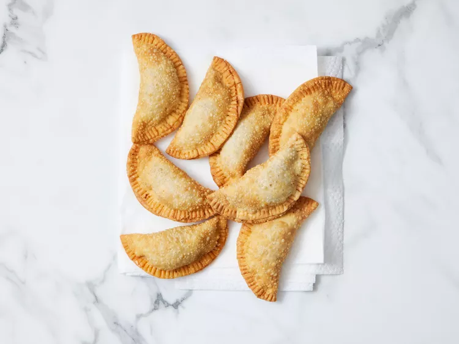

This beef empanada recipe is made with Goya Discos pastry rounds and a mouthwatering filling of seasoned ground beef, tomatoes, onions, and garlic. Enjoy these flaky, deep-fried empanadas as an appetizer, a main dish, or even after your main course.
ingredients
Instructions
Gather the ingredients.
Heat olive oil in a large skillet over medium heat. Add ground beef; cook and stir until browned and crumbly, about 10 minutes. Add onions and cook until soft, about 5 minutes.
Stir in tomato sauce, olives, sofrito, sazón, garlic, oregano, and pepper. Reduce the heat to medium-low and simmer until mixture thickens, about 15 minutes.
Roll empanada disks on a lightly floured surface until 1/2 inch larger in diameter. Spoon about 1 tablespoon meat mixture into the middle of each disk. Moisten the disk edges with water, fold in half over filling to form a half-moon, and pinch to seal (or seal with a fork).
Heat 2 1/2 inches corn oil in a deep-fryer or large saucepan to 350 degrees F (175 degrees C). Working in batches, fry empanadas until crisp and golden brown, flipping once, 4 to 6 minutes.
Transfer to paper towels to drain. Enjoy!
